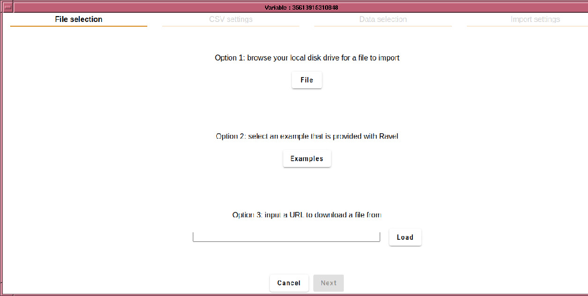
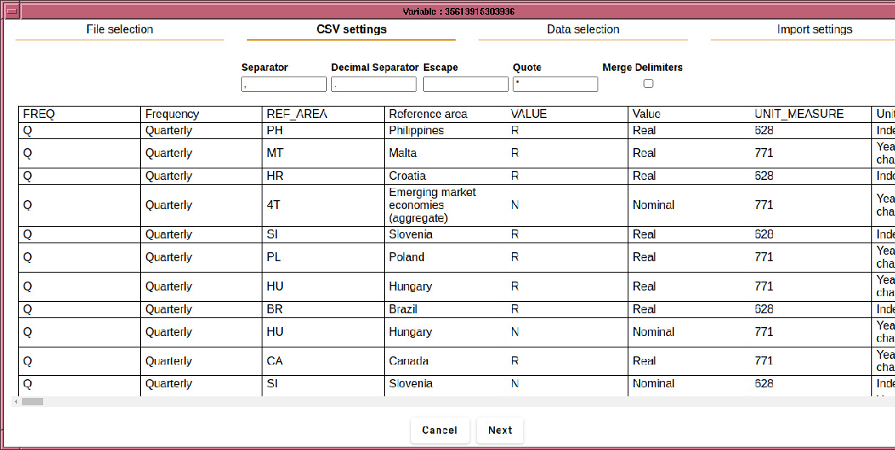

After creating a parameter from the ``Variable'' drop-down in the ``Insert'' menu, right-clicking the parameter and selecting the option to ``Import CSV'', will open a dialogue box that allows you to select a CSV file. Upon selecting the file, a dialog is opened, allowing you to specify assorted encoding parameters.
An alternative is to click on the ImportData icon
 ,
which will create a new parameter for you to import the data into.
,
which will create a new parameter for you to import the data into.
The dialog looks somewhat like this (developments in the import routine may change some layout details):

It has 4 tabs, which lead you through the import process. The first tab is for selecting the source, which may be a file, one of the included examples, or a URL to a remote file (possibly zipped).
Once the file is loaded, the form automatically advances to the CSV setting tab. For conformant CSV files, only the separator character and quote are important. Some nonconformant files use an escape character such as `t́o mark the following character as a literal, and if using space separated data, you may want to treat successive separators as a single separator, in which case, select ``Merge delimiters''. If loading European data, you may need to set the decimal separator to `,'.
